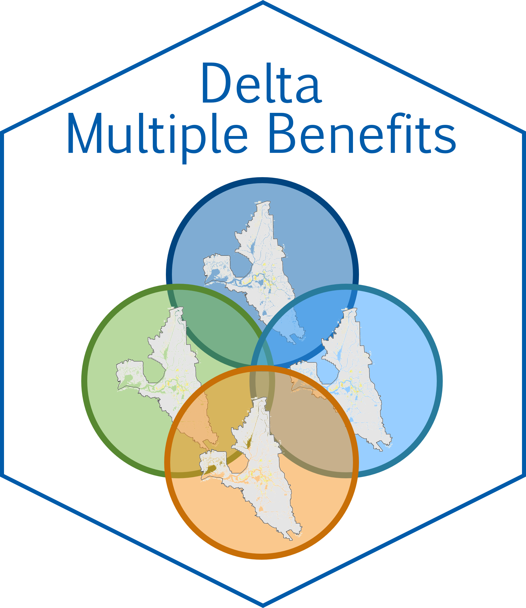

Create raster stack representing SDM predictors
Source:R/create_predictor_stack.R
create_predictor_stack.RdPrepare for fitting SDMs by transforming a landscape raster into a stack of rasters representing the required predictors.
Arguments
- x
SpatRaster; can only have 1 layer
- SDM
The name of intended species distribution model:
"riparian","waterbird_fall","waterbird_win", or"tima"- classified
logical; see Details
- fill
logical; see Details
- verbose
logical; passed to
classify_landcover.SpatRaster()
Value
SpatRaster with separate layers for each land cover class included as a predictor in the selected SDM representing the presence (1) and absence (0)
Details
This function is called by python_focal_prep() and is not intended to be
called directly. Segregates a landscape raster into separate layers
representing each land cover class. Also calls on internal datsets to create
broader grouping variables as required for the selected SDM. The input raster
should already be encoded with the land cover classes listed in the key.
If classified = FALSE (the default), this function calls
classify_landcover.SpatRaster() to reclassify the input raster according to
the land cover classifications expected by the selected SDM. (See
documentation from that function for information on warning messages.) If
classified = TRUE, it will be assumed to already be classified correctly,
which may be of particular use for the 'riparian' models. See Vignette for
details.
A warning is given if land cover classes expected by the model are absent
from the provided landscape. In that case, if fill = TRUE (the default),
additional layers will be created with all zero values for each missing land
cover class. However, the input landscape should be carefully reviewed to
ensure they are truly absent and have not been excluded from the landscape
unintentionally. If needed, the resulting layers can be replaced manually
before proceeding with python_focal_run().
Examples
r <- terra::rast(matrix(sample(c(11,19,71,72,90), size = 100, replace = TRUE),
ncol = 10, nrow = 10))
r = suppressWarnings(create_predictor_stack(r, SDM = 'riparian'))
#> AG RICE IDLE GRASSPAS URBAN SALIX MIXEDFOREST INTROSCRUB SALIXSHRUB MIXEDSHRUB PERM BARREN WOODLAND&SCRUB
#> Because fill = TRUE, creating missing rasters with all zero values, butconfirm they are truly absent from the landscape.